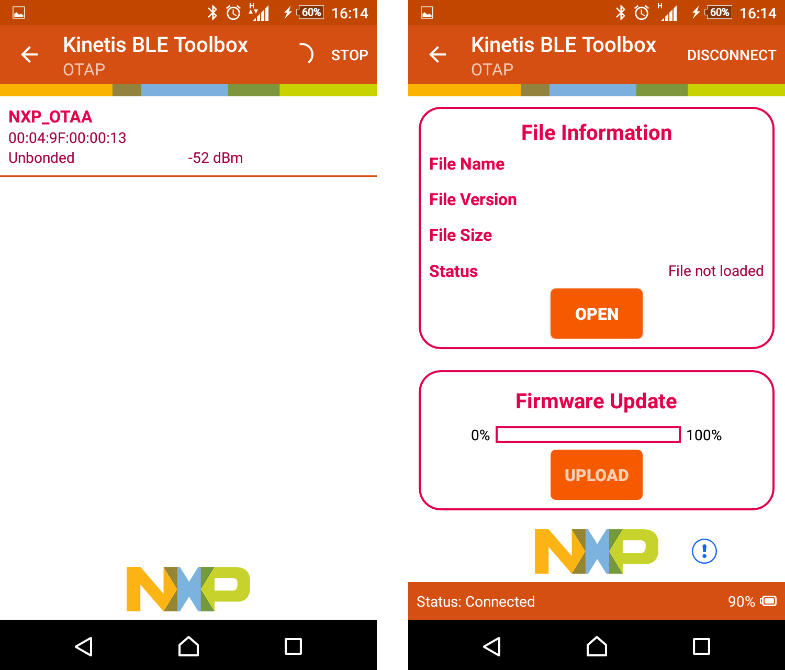
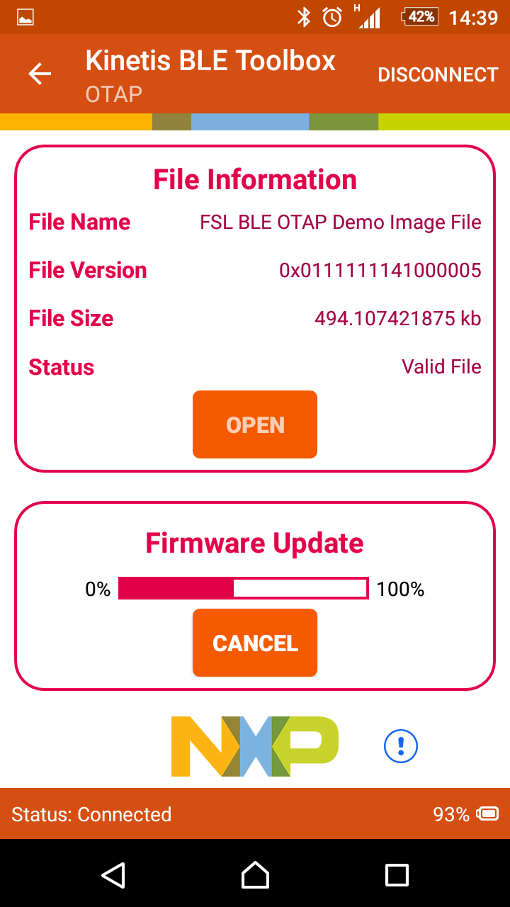

This is the list of requirements.
- Mobile device running Android platform of iOS with hardware and software supporting Bluetooth 4.0 and later
- Kinetis BLE Toolbox application – download from the specific application store for your device
To run the application do the following.
- Flash the OTAP Client ATT applications to a KW4x board. The Kinetis BLE Toolbox only supports the ATT OTAP Client
- Create the application to send over the air in .srec format. Follow the instructions from the previous section on how to do this.
Remember to include the Bootloader in its appropriate section in your application.
- Start the Kinetis BLE Toolbox application on your mobile device and start the OTAP Tool. The application starts scanning.
- Press SW4 on the KW4x board to start Advertising on the embedded OTAP Client application. The device should show up in the list of scanned devices.
Touch the device in the scan list to connect to and the application performs service discovery and displays some information shown in the figures below.
Figure 1. Kinetis BLE Toolbox - OTAP Tool Scanning and Discovery

- Press the “Open” button and load the .srec file to be sent over-the-air. Once the file is loaded some information about it is displayed. Press the “Upload” button to start the
image transfer process. A progress bar is shown while the image transfer is ongoing. The successful transfer is signaled by the progress bar reaching 100%. This is shown in the figures below.
Figure 2. Kinetis BLE Toolbox - OTAP Image Transfer

- After the image transfer is complete the OTAP Client triggers the bootloader and resets the MCU. The bootloader takes about 30 seconds to flash a 512 KB image on a
FRDM-KW41 platform. After this time passes the MCU resets again and runs the new image.